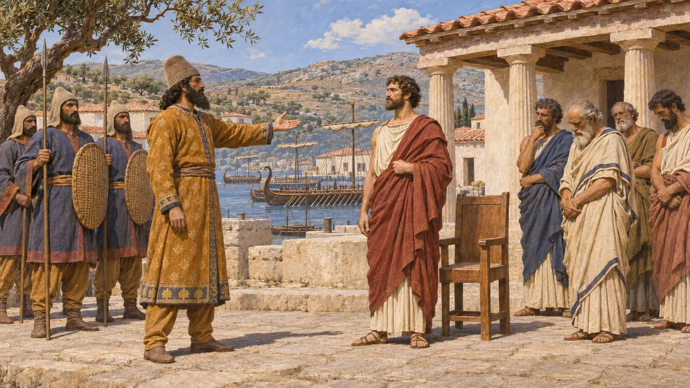
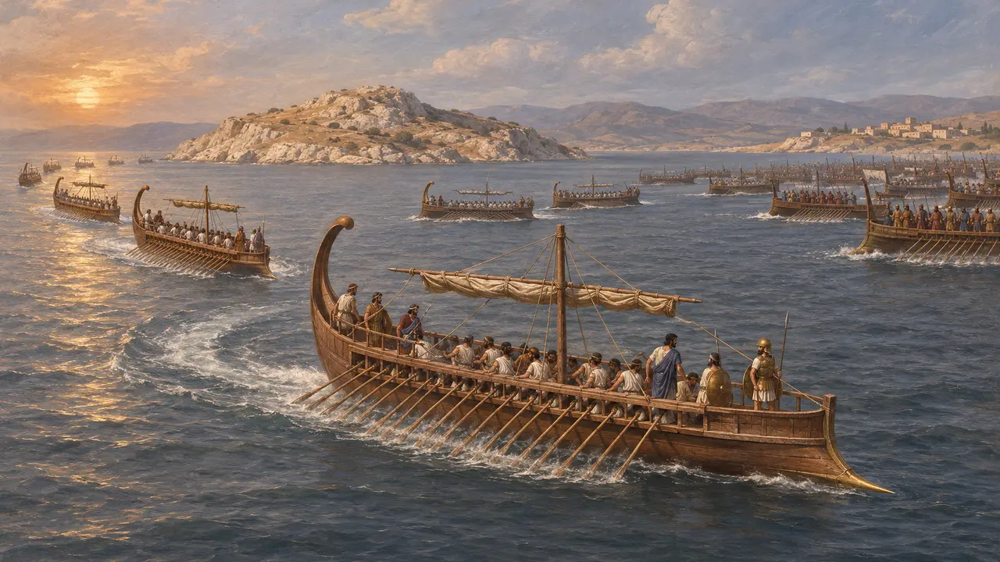
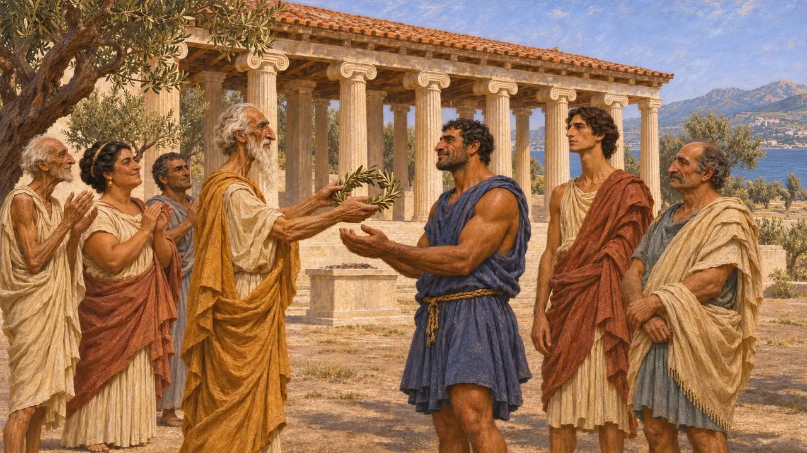
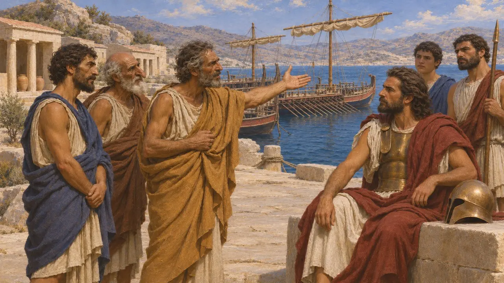
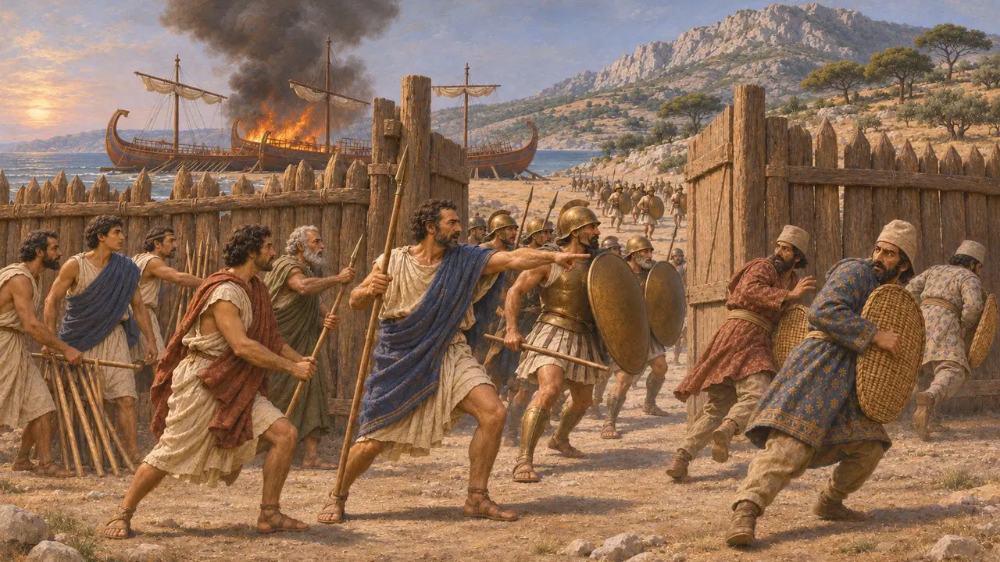
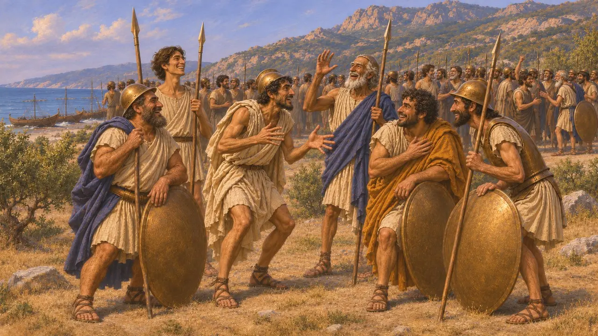

الساميون
إغريق أيونيون من جزيرة ساموس، رعايا للفرس وثوار عليهم، نحو 517-479 ق.م
في اللعبة: المستوى 7: سارديس تحترق، المستوى 11: الخاتمة، ميكالي
كان الساميون الإغريقَ الأيونيين في ساموس، جزيرة قبالة ساحل آسيا الصغرى. دخلت ساموس تحت الحكم الفارسي في عهد داريوس. يذكر هيرودوت الساميين عند منعطفين، لادي سنة 494 ق.م وميكالي سنة 479 ق.م، ويقول إن اختيار الساميين كان حاسمًا في كليهما.
في اللعبة: تذكر اللعبة الساميين في الحوليات والمراسيم وموجزات الميدان، في شأن لادي وميكالي. وليس لهم آلية خاصة بهم سوى ما تُظهره تلك النصوص.

ساموس تحت الحكم الفارسي
رواية قديمةيقول هيرودوت إن طاغية ساموس بوليكراتيس بنى أسطولًا كبيرًا، فاستدرجه الحاكم الفارسي أورويتيس إلى البرّ وقتله. ثم، كما يقول، طلب سيلوسون أخو بوليكراتيس ساموسَ من داريوس. ففتح أوتانيس الجزيرة ونصّب سيلوسون حاكمًا عليها.
Herodotus 3.120-125, 3.139-149

الساميون في لادي
رواية قديمةيقول هيرودوت إن 353 سفينة أيونية ثلاثية المجاديف لقيت أسطولًا فارسيًا من 600 سفينة قبالة لادي. وكان قادة الساميين قد اتفقوا مع الفرس على ترك الصف. فلما بدأ القتال، كما يقول، أبحرت 49 سفينة سامية بعيدًا وبقيت 11 تقاتل. ثم تبع الليسبوسيون الساميين وانكسر الأسطول الأيوني.
Herodotus 6.8-15

مصداقية رواية لادي
متنازع عليهيحمّل هيرودوت انسحاب الساميين تبعة الهزيمة، مع أنه يقول أيضًا إن الأيونيين كانت تنقصهم الطاعة. ويشكّ المؤرخون في أن انشقاقًا واحدًا حسم المعركة، ولا يمكن التحقق من أعداد سفنه. ويقول إن الساميين الذين ثبتوا كُرّموا في بلدهم، وإن الفرس عفّوا عن معابد ساموس.
Herodotus 6.13-14, 6.25


الساميون في ميكالي
رواية قديمةيقول هيرودوت إن الفرس سحبوا سفنهم إلى الشاطئ وأقاموا سياجًا. ولعدم ثقتهم بالساميين نزعوا سلاحهم وأرسلوا الميليتيين لحراسة الدروب. فلما هاجم الإغريق بقيادة ليوتيخيداس وكسانثيبوس، كما يقول، انقلب الساميون وغيرهم من الأيونيين على الفرس، وأُحرقت السفن.
Herodotus 9.96-106

المصادر
- Herodotus 6.8-15
- Herodotus 9.96-106
- Herodotus 3.120-149
- Herodotus 8.130-132